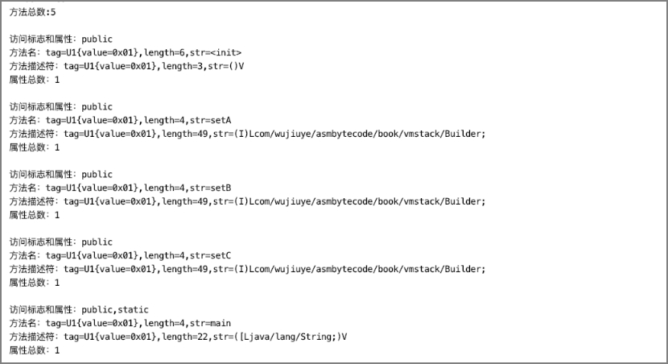

解析方法表

class文件的方法表用于存放一个类或者接口的所有方法，方法结构与字段结构一样，都有属性表，方法编译后的字节码指令是存放在方法结构的属性表中的，对应Code属性。但不是所有方法都会有Code属性，如接口中的方法不一定会有Code属性，如抽象方法一定没有Code属性。方法包括静态方法、以及类的初始化方法
方法表结构如下。
| 字段名 | 类型 | 说明 |
|---|---|---|
| access_flags | u2 | 方法的访问标志和属性 |
| name_index | u2 | 方法名，值为指向常量池中某个常量的索引 |
| descriptor_index | u2 | 方法描述符，值为指向常量池中某个常量的索引 |
| attributes_count | u2 | 属性总数 |
| attributes | attribute_info | 属性表 |
其中方法名称索引、方法描述符索引与字段结构中的字段名索引和字段类型描述符索引，都是指向常量池中CONSTABT_Utf8_info结构的常量。与字段结构一样，方法结构也拥有属性总数和属性表，只是也会存在一些差异，如方法有Code属性而字段没有。访问标志也与字段的访问标志有些区别，如字段有ACC_VOLATILE标志而方法没有。
| 标志名 | 十六进制取值 | 说明 |
|---|---|---|
| ACC_PUBLIC | 0x 00 01 | 声明方法访问权限为public |
| ACC_PRIVATE | 0x 00 02 | 声明方法访问权限为private |
| ACC_PROTECTED | 0x 00 04 | 声明方法访问权限为protected |
| ACC_STATIC | 0x 00 08 | 声明方法为static |
| ACC_FINAL | 0x 00 10 | 声明方法为final，不允许覆盖 |
| ACC_SYNCHRONIZED | 0x 00 20 | 同步方法，多线程调用加锁 |
| ACC_BRIDGE | 0x 00 40 | 声明为bridge方法，由编译器产生 |
| ACC_VARARGS | 0x 00 80 | 方法有可变长参数 |
| ACC_NATIVE | 0x 01 00 | native方法 |
| ACC_ABSTRACT | 0x 04 00 | 抽象方法 |
| ACC_STRICT | 0x 08 00 | 使用FP-strict浮点模式 |
| ACC_SYNTHETIC | 0x 10 00 | 非源代码编译出来的 |
首先，根据方法结构创建对应的Java类MethodInfo，代码如下。
public class MethodInfo {
private U2 access_flags;
private U2 name_index;
private U2 descriptor_index;
private U2 attributes_count;
private AttributeInfo[] attributes;
}
其次是创建方法表解析器，代码如下。
public class MethodHandler implements BaseByteCodeHandler {
@Override
public int order() {
// 排在字段解析器的后面
return 7;
}
@Override
public void read(ByteBuffer codeBuf, ClassFile classFile)
throws Exception {
classFile.setMethods_count(new U2(codeBuf.get(), codeBuf.get()));
// 获取方法总数
int len = classFile.getMethods_count().toInt();
if (len == 0) {
return;
}
// 创建方法表
MethodInfo[] methodInfos = new MethodInfo[len];
classFile.setMethods(methodInfos);
for (int i = 0; i < methodInfos.length; i++) {
// 解析方法
methodInfos[i] = new MethodInfo();
methodInfos[i].setAccess_flags(new U2(codeBuf.get(),codeBuf.get()));
methodInfos[i].setName_index(new U2(codeBuf.get(), codeBuf.get()));
methodInfos[i].setDescriptor_index(new U2(codeBuf.get(), codeBuf.get()));
methodInfos[i].setAttributes_count(new U2(codeBuf.get(), codeBuf.get()));
// 获取方法的属性总数
int attr_len = methodInfos[i].getAttributes_count().toInt();
if (attr_len == 0) {
continue;
}
// 创建方法的属性表
methodInfos[i].setAttributes(new AttributeInfo[attr_len]);
for (int j = 0; j < attr_len; j++) {
methodInfos[i].getAttributes()[j] = new AttributeInfo();
// 解析方法的属性
methodInfos[i].getAttributes()[j]
.setAttribute_name_index(new U2(codeBuf.get(), codeBuf.get()));
// 获取属性info的长度
U4 attr_info_len = new U4(codeBuf.get(), codeBuf.get(), codeBuf.get(), codeBuf.get());
methodInfos[i].getAttributes()[j] .setAttribute_length(attr_info_len);
if (attr_info_len.toInt() == 0) {
continue;
}
// 解析info
byte[] info = new byte[attr_info_len.toInt()];
codeBuf.get(info, 0, attr_info_len.toInt());
methodInfos[i].getAttributes()[j].setInfo(info);
}
}
}
}
提示：与字段表的解析流程一样，我们暂时不关心属性表的具体属性的解析，属性表的解析只使用通用属性结构解析。
最后是将方法表解析器注册到ClassFileAnalysiser，这一步省略。
现在我们来编写单元测试，验证方法表解析器解析结果的正确性，方法表解析器的单元测试与字段表解析器的单元测试逻辑差不多，代码如下。
public class MethodHandlerTest {
private static String getName(U2 name_index, ClassFile classFile) {
CONSTANT_Utf8_info name_info = (CONSTANT_Utf8_info)
classFile.getConstant_pool()[name_index.toInt() - 1];
return name_info.toString();
}
@Test
public void testMethodHandlerHandler() throws Exception {
ByteBuffer codeBuf = ClassFileAnalysisMain.readFile("Builder.class");
ClassFile classFile = ClassFileAnalysiser.analysis(codeBuf);
System.out.println("方法总数:" + classFile.getMethods_count().toInt());
System.out.println();
MethodInfo[] methodInfos = classFile.getMethods();
// 遍历方法表
for (MethodInfo methodInfo : methodInfos) {
System.out.println("访问标志和属性：" + FieldAccessFlagUtils
.toFieldAccessFlagsString(methodInfo.getAccess_flags()));
System.out.println("方法名：" + getName(methodInfo.getName_index(), classFile));
System.out.println("方法描述符："
+ getName(methodInfo.getDescriptor_index(), classFile));
System.out.println("属性总数：" + methodInfo.getAttributes_count().toInt());
System.out.println();
}
}
}
单元测试结果如下。

从单元测试结果可以看出，该单元测试解析的class文件有5个方法，访问权限都是public，其中有一个方法是静态方法。这五个方法的属性表都只有一个属性，实际都是Code属性。这五个方法的方法名称分别是
发布于：2021 年 07 月 24 日
作者: 吴就业
链接: https://wujiuye.gitbook.io/jvmbytecode
来源: GitBook开源电子书《深入浅出JVM字节码》（《Java虚拟机字节码从入门到实战》的第二版），未经作者许可，禁止转载!